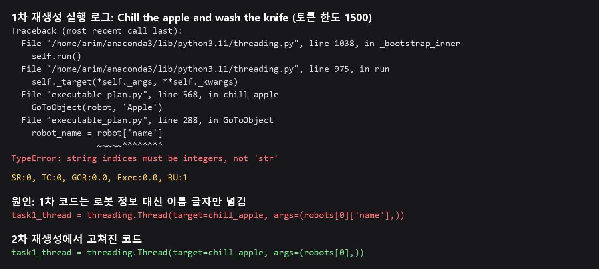

SMART-LLM 다중 로봇 계획
계획 오류,
실행 전에 잡기
자동 검증과 재생성 루프로 보완하기
AI2-THOR · gpt-4o-mini
2023110224 김아림
만들어진 코드는 대부분 바로 쓸 수 없었다
PROBLEM
3 / 18
출력 형식을 빼고
내용만 검사해도
18개 중 3개만 통과
내용만 검사해도
18개 중 3개만 통과
태스크 9개 × 토큰 한도 2가지
(검증기 기준)
(검증기 기준)
실패 유형 (18개 중, 겹칠 수 있음)
출력 형식 오염18
로봇 인자 누락7
로봇 목록 재정의7
로봇 자리에 문자열3
물건을 든 채로 종료3
넣을 수 없는 물건2
02
실행하기 전에 검사하고, 틀리면 다시 만든다
METHOD
코드 생성SMART-LLM 3단계
→
정적 검증실행하지 않고 코드만 읽음
→
시뮬레이터 실행통과한 코드만
↑↓
재생성, 최대 3회오류 내용을 모델에 알려 줌
약 1분 재생성, 태스크 9개
몇 분~수십 분 시뮬레이터, 태스크 1개
몇 분~수십 분 시뮬레이터, 태스크 1개
03
검증을 통과해도 실행에서 실패할 수 있었다
VALIDATOR
검증기 통과 (같은 규칙으로 채점, 18개 중)
원본3
1차 재생성11
2차 재생성14
검증 통과 ≠ 작업 성공
1차 코드 16개를 실행하니 5개가 실패
1차 코드 16개를 실행하니 5개가 실패
실패를 보고 추가한 규칙
TypeError 2개
로봇 자리에 문자열이 들어감
목표 실패 1개
상추를 든 채로 종료
목표 실패 2개
자르지 않은 빵을 토스터에 넣음
04
시연 1. 1차 코드는 시작하자마자 멈췄다
DEMO · BEFORE

실행 로그에서 로봇 1의 오류 부분을 발췌. 같은 오류가 로봇 2에서도 발생함
05
시연 2. 2차 코드는 로봇 2대가 끝까지 수행했다
DEMO · AFTER
12개 중 대표 사례 1개 · 토큰 한도 1500 · 속도 조절함 · 칼 씻기는 점수 조건에 없음
06
목표 달성: 12개 중 7개에서 11개로
SIMULATOR
목표 달성 (TC 1)
7 → 11
실패 3개 → 0개
판정 불가 2개 → 1개
SR 1 5개 → 6개
판정 불가 2개 → 1개
SR 1 5개 → 6개
판정 불가를 범위로 봐도
7~9개 vs 11~12개
7~9개 vs 11~12개
판정 불가: 제한 시간 안에 끝나지 않거나 연결이 끊겨 결과가 없음
07
가설은 확인되지 않았고, 대신 버그를 찾았다
FINDINGS
가설: 토큰 한도 400 때문에 답이 잘려서 실패한다
4001500
답변 잘림 (9개 중)80
재생성 전 통과40
재생성 후 통과87
잘림은 사라졌지만 통과는 늘지 않음
(조건별 1회)
(조건별 1회)
버그: 태스크끼리 로봇 이름을 덮어씀
rob = robots.robots[r_id-1]rob = copy.deepcopy(robots.robots[r_id-1])
Wash the fork수정 전수정 후
한도 4004회 모두 실패첫 시도 통과
한도 15004회 모두 실패재생성 1회
08
이 숫자는 어디까지 믿을 수 있나
LIMITS
01
표본 내 결과
실패를 보고 만든 규칙을 같은 태스크에 다시 적용했다.
처음 보는 태스크에서도 효과가 있는지는 모른다.
처음 보는 태스크에서도 효과가 있는지는 모른다.
02
작은 표본, 큰 편차
조건별 1~2회 실행. Wash the fork(1500)는 같은 코드가
한 번은 15분 초과, 한 번은 9분 51초에 끝났다.
한 번은 15분 초과, 한 번은 9분 51초에 끝났다.
03
TC는 작업 전체를 보지 않는다
마지막 상태만 확인한다. 12개 중 6개는 씻었는지를 확인하지 않는다.
아직 안 풀린 문제
Slice apple, Toast a slice
4번 시도해도 검증 실패
Slice the tomato (1500)
30분에도 끝나지 않음
Put two vegetables
검증 통과, 정답과 다른 재료 선택
09
실행 전에 잡을 수 있는
오류는 많았다
검증 통과 (18개 중)
3 → 14
시뮬레이터 목표 달성 (12개 중)
7 → 11
다음 단계 안 풀린 문제가 할당 단계 때문인지 확인하고,
LaMMA-P 기반 작업 할당을 구현해 SMART-LLM과 비교한다
LaMMA-P 기반 작업 할당을 구현해 SMART-LLM과 비교한다
10